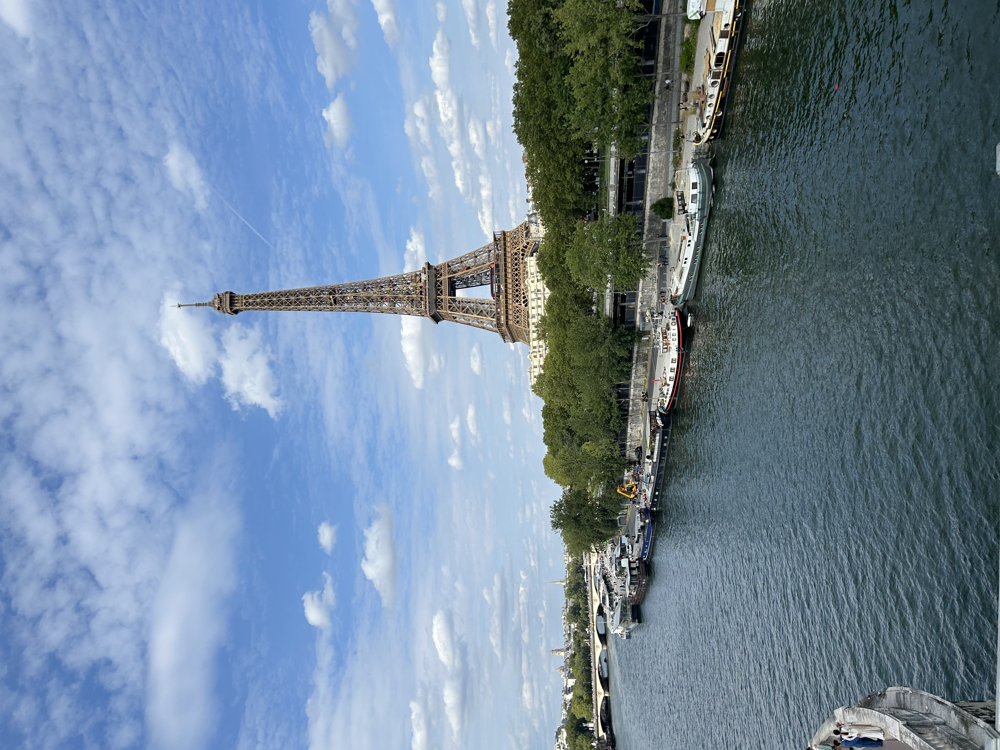

Description
My favorite country to visit is France. I absolutely love everything about it—the culture, the food, the people, and the atmosphere. I have been to France seven times, and I still feel like I have not had enough of it. Each trip feels different, and there is always something new to discover. I’ve been to Paris, Saint Tropez, and Cannes, and each city has its own special charm. I would love to explore other parts of the country such as Lyon, Bordeaux, and Normandy someday. My favorite city in France is definitely Saint Tropez. I love the energy of the nightlife, the beautiful beaches, and the amazing restaurants. The going-out scene there is unmatched. During the day, people usually go to beach clubs in Ramatuelle, where you can relax by the ocean, enjoy a long lunch, and then stay as the restaurant transforms into a lively afternoon party. My favorite restaurant in all of France is Le Relais d’Entrecôte. It has only one thing on the menu, steak frites, and it’s my absolute favorite dish. The steak is served with a rich, creamy green pepper sauce that’s unbelievably delicious. You even get two servings, cooked perfectly to your liking.
My Favorite Restaurants in Paris:
- Le Relais d'Entrecote
- L'as Du Falafel
- Hasalon